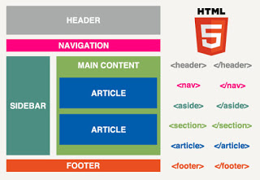

Con el objetivo de aprender el diseño de sitios web. La Universidad Nacional fomenta el uso de esta plataforma
en donde se presentara guias, foros y materiales de aprendizaje para la creacion de Etiquetas Semanticas, Listas y enlaces.
Etiquetas Sematicas
Las Etiquetas Semanticas son aquellas que indican que contenido contienen.
Un ejemplo mas claro de esta definicion es, el querer mostrar un dato u valor de una manera resaltada o de manera especifica para que sea visible
Existen una amplia variedad de etiquetas sematicas, estan aquellas que definen la parte principal de un documento como lo son HEADER, ARTICLE y FOOTER, que definen
el encabezado, el articulo u texto a desarrollar, y el pie de pagina o todo aquello que aparece en ultima instancia.
Luego tenemos otras como hgroup, section, nav y aside, que permite marcar y agrupar, partes o secciones de uno o mas elementos.

Miguel Angel Alvarez, M. A. (2012, 4 junio). Etiquetas Semanticas. desarrolloweb.com. https://desarrolloweb.com/articulos/etiquetas-semanticas-html5.html
Listas
Las Listas en html 5, permite crear un conjunto de elementos en forma de lista dentro de una pagina, A continuacion mencionare diferentes tipos de listas que se pueden desarrollar en HTML.
Listas Ordenadas (ol): En html 5, una lista ordenada mostrara los elementos de manera ordenada, enlazando los elementos con numero o letras que permitiran establecer su orden.
Listas Desordenadas (ul): En html 5, una lista desordenada mostrara los elementos sin ningun orden pero marcara con viñetas los elementos, ya sean puntos o cuadros.
Listas de Definicioness (dl): En html 5, una lista de definicion funciona con el objetivo de montar elementos con definicion o valor, un ejemplo seria un parton de diccionario.
Listas en HTML 5. (s. f.). Manual Web. http://www.manualweb.net/html/listas-html/

Enlaces
Los Enlaces son importantes, en el desarrollo de paginas web estos permiten enlazar o comunicar otras paginas, imagenes o documentos html con la pagina existente.
Se puede enlazar dominios o recursos de red destinados a propositos mas tecnicos, o incluso enlazar el alcanze o descarga de ficheros.
Enlaces. (s. f.). Manual Web. http://www.manualweb.net/html/enlaces-html/